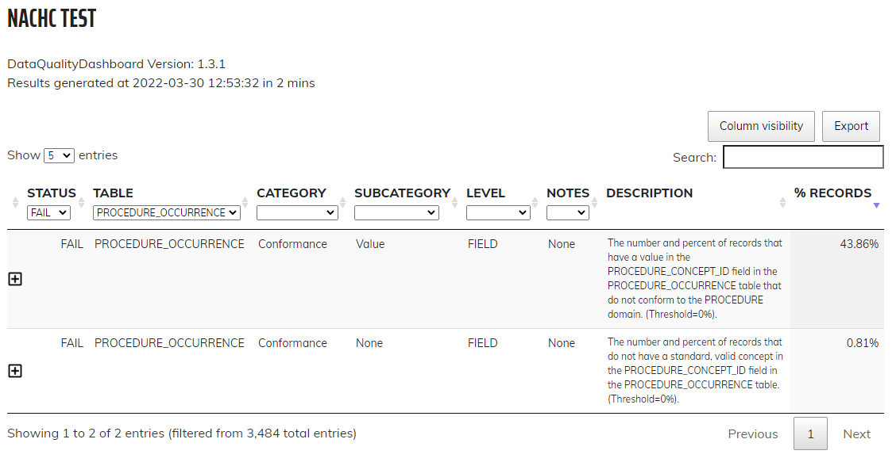
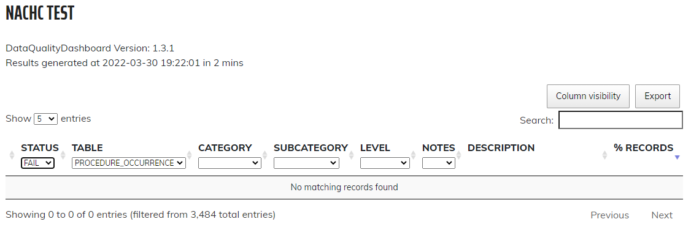

| General Mapping Resources | This is the fhir-to-omop documentation for general FHIR and OMOP information. |
| FHIR Procedure (STU3) | FHIR Documentation for the Procedure resource. The following version have been considered. |
| PROCEDURE_OCCURRENCE | This is the OMOP documentation for the PROCEDURE_OCCURRENCE table. |
| 0a2a950e-59b0-4669-8007-a505a3f14cbc | This patient has examples of FHIR Procedure resources, and specifically has examples of Procedure resources that use codes other than procedure codes (e.g. Measurement, Observation, and Condition). The set of files in this folder represent the full set of FHIR resources for the synthmass patient 0a2a950e-59b0-4669-8007-a505a3f14cbc. |
OMOP procedure records are mapped from FHIR Procedure resources. Attribute level details of how FHIR Procedure resources are parsed are in the ProcedureParser class.
Attribute level details of how the parser is mapped to OMOP records are in the OmopProcedureBuilder class.
We have found FHIR Procedure resources using codes that are not procedure codes. These codes include codes for Measurements, Observations, and Conditions. The OMOP Data Quality Dashboard (DQD) tests indicated all records in the procedure table should have a procedure_concept_id that mapps to a concept that is in the Procedure domain (i.e. domain_id = "Procedure"). Therefore, when Procedure FHIR resources are found that have a coding that is for a Measurement, Observation, or Condition these FHIR procedures are not written to the OMOP procedure table but are respetively written to the measurement, observation_occurrence, or condition tables. The code for this is also in the OmopProcedureBuilder class. DQD results before and after making these distinctions are shown below.
On April 08, 2022 we updated our DQD instance to the latest version. This included a number of new tests that were failing. These failures have been remediated and the testing results are shown below.
Prior to mapping FHIR Procedure resources to Measurement, Observation, Condition, and Procedure the following results were obtainded after running the DQD.
|  |
After mapping FHIR Procedure resources to Measurement, Observation, Condition, and Procedure all tests for Procedure are passing.
|  |
The following is a list of FHIR resources found to have non-procedure codings (i.e. domain_id should be "Procedure" and is not). The person_source_code shown is the ID for the patient found on synthmass. Click here to download the larger list.